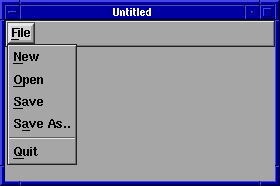

Kit zum Erstellen von Menübalken.
string keychord_to_string(KeyChord k)
KeyChord string_to_keychord(string s)
|
|
|
MenuItem submenu_item()
MenuItem leaf_item()
MenuItem separator_item()
|
|
|
|
MenuManager menu_manager(MenuItem item)
|
|
|
|
MenuBar menu_bar(MenuItem item)
|
|
|
|
ToolBar tool_bar(MenuItem item)
|
|
|
PopupMenu popup_menu(MenuItem item)
PopupMenu pulldown_menu(MenuItem item)
PopupMenu pullright_menu(MenuItem item)
|
|
|
Beispiel:

/*
*
* Beispiel für einen Menübalken
* written 1997 by Mark-André Hopf
*
*/
typedef unsigned long ulong;
#include <iostream.h>
#include <Fresco/base/fresco.h>
#include <Fresco/defs/layouts.h>
#include <Fresco/defs/widgets.h>
#include <Fresco/base/viewers.h>
// declares 'KitFactory':
#include <Fresco/figures/utility.h>
// declare 'ActionCallback'
// (should be '#include <Fresco/base/action.h>' in the final
// FRESCO release, which will never come)
#include "action.h"
// declares 'QuitCmd' class
#include <Fresco/figures/commands.h>
class TMainWindow: ixx_extends(ViewerImpl)
{
public:
TMainWindow();
private:
MenuItem_var mb_root;
MenuBar_var mb_bar;
MenuManager_var mb_mgr;
void menuNew();
void menuOpen();
void menuSave();
void menuSaveAs();
};
int main(int argc, char **argv)
{
// CORBA Context erzeugen & mit Xlib Verbindung zum Server aufbauen
//------------------------------------------------------------------
FrescoContext* fc = FrescoLib::init_default_context("MenuBarExample", argc, argv);
// Fenster erzeugen und Anwendung starten
//----------------------------------------
Viewer_var wnd = new TMainWindow;
Display_var display = fc->display_ptr();
Screen_var screen = display->default_screen();
Window_var window = screen->application(wnd);
Viewer_var(window->main_viewer())->request_focus(wnd, false);
window->map();
display->run(true);
return 0;
}
TMainWindow::TMainWindow()
:ViewerImpl(false)
{
// get factory kits
//------------------
FigureKit *figurekit = KitFactory::instance()->figures();
LayoutKit *layoutkit = KitFactory::instance()->layouts();
WidgetKit *widgetkit = KitFactory::instance()->widgets();
MenuKit *menukit = KitFactory::instance()->menus();
DrawingKit *drawingkit = KitFactory::instance()->drawings();
// create menubar
//----------------
mb_root = menukit->submenu_item();
mb_bar = menukit->menu_bar(mb_root); // Menübalken
mb_mgr = menukit->menu_manager(mb_root); // Manager
mb_mgr->root_menu(mb_bar); // Top
// create menubar 'File' pulldown
//--------------------------------
MenuItem *pd;
pd = menu_item_string("File", 'F');
pd->append(MenuItem_var(button_item_string(
"New", 'N', Action_var(
new ActionCallback<TMainWindow>(this,TMainWindow::menuNew)
))));
pd->append(MenuItem_var(button_item_string(
"Open", 'O', Action_var(
new ActionCallback<TMainWindow>(this,TMainWindow::menuOpen)
))));
pd->append(MenuItem_var(button_item_string(
"Save", 'S', Action_var(
new ActionCallback<TMainWindow>(this,TMainWindow::menuSave)
))));
pd->append(MenuItem_var(button_item_string(
"Save As..", 'A', Action_var(
new ActionCallback<TMainWindow>(this,TMainWindow::menuSaveAs)
))));
pd->append(menukit->separator_item());
pd->append(MenuItem_var(button_item_string(
"Quit", 'Q', Action_var(new QuitCmd())
)));
mb_root->append(pd);
// stretch menubar horizontally
//------------------------------
mb_root->append(menukit->separator_item());
// force FRESCO to recalculate the menubar size (it's a hack)
//------------------------------------------------------------
mb_bar->need_resize();
// place menubar
//---------------
Glyph_var g1 = layoutkit->vbox();
g1->append(mb_bar);
body(
Glyph_var(layoutkit->back(
Glyph_var(layoutkit->flexible_fil(g1)),
Glyph_var(widgetkit->filler())
))
);
}
// Callbacks
//-----------
void TMainWindow::menuNew()
{
cout << "menuNew!!!\n";
}
void TMainWindow::menuOpen()
{
cout << "menuOpen!!!\n";
}
void TMainWindow::menuSave()
{
cout << "menuSave!!!\n";
}
void TMainWindow::menuSaveAs()
{
cout << "menuSaveAs!!!\n";
}